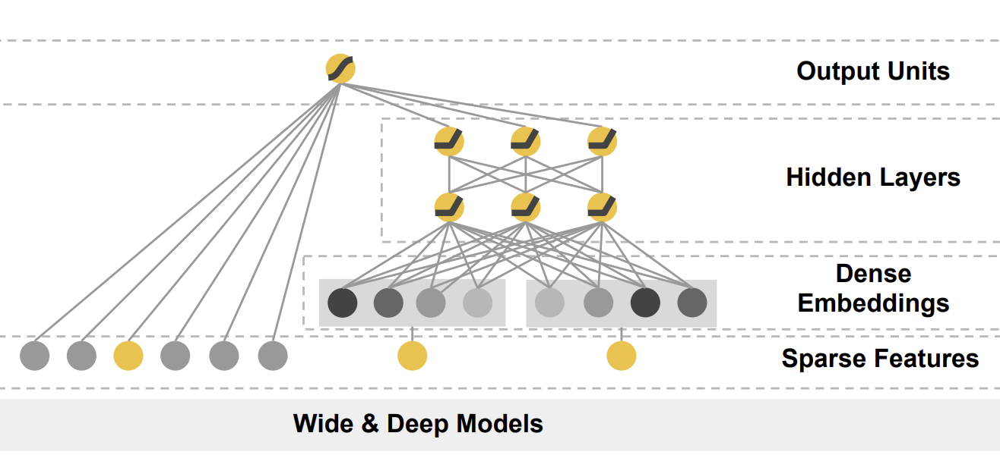
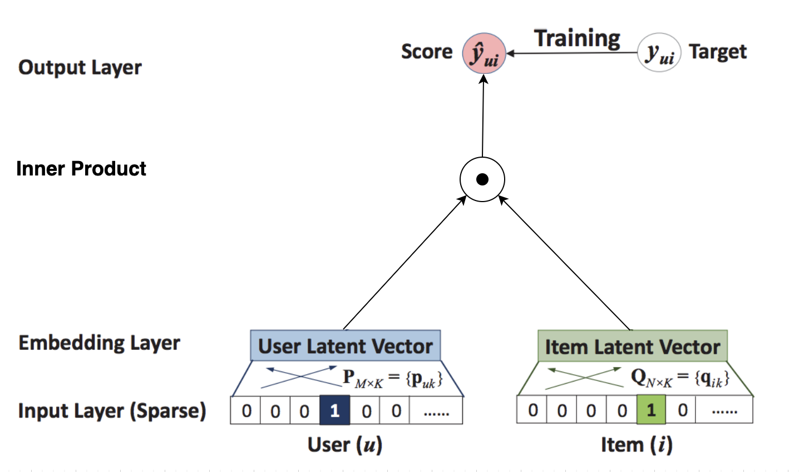
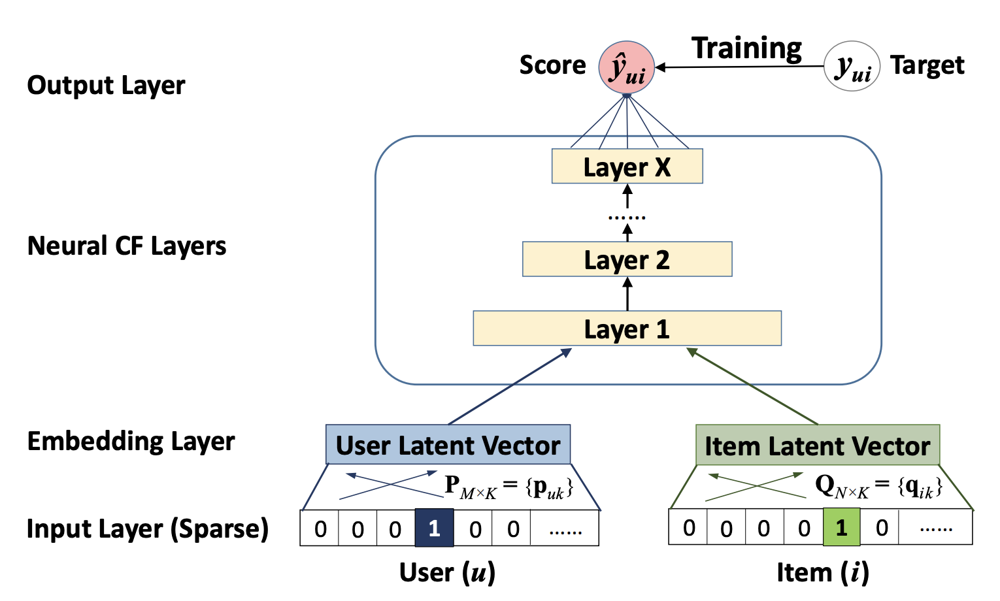
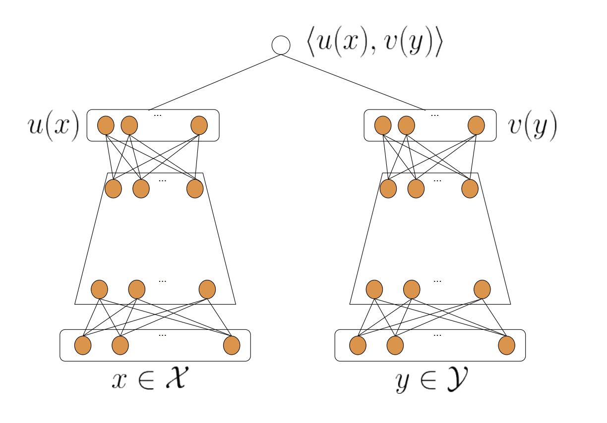
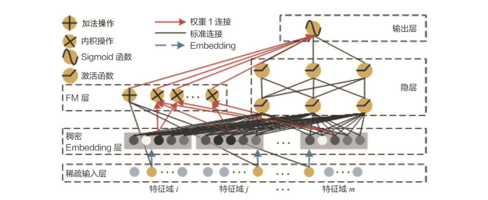

深度学习模型-基础¶
Embedding + MLP¶
Embedding + MLP是最经典的深度学习推荐模型结构，也是后续诸多模型的基础。
它就是在Embedding的基础上，加入多层神经网络（MLP）
以2016年微软提出的Deep Crossing为例，进行说明

feature层：类别型特征如feature#1向上连接到Embedding层，而数值型特征如feature#2则直接连接到stacking层，因为数值型特征无维数过大和需捕捉相互间关系的问题。
embedding层：是一个个全连接神经网络。
stacking层：堆叠层，即将各个向量拼接（concatenate）在一起。
MLP层：多层神经网络，这里使用了残差（residual）结构，不过这不重要，我们使用普通的mlp也可。
scoring层：若是二分类问题，则使用sigmoid，若是多分类，则使用softmax。
导入tensorflow¶
import tensorflow as tf
载入训练、测试数据¶
# Training samples path, change to your local path
training_samples_file_path = tf.keras.utils.get_file("trainingSamples.csv",
"file:///Users/facer/IdeaProjects/SparrowRecSys/src/main"
"/resources/webroot/sampledata/trainingSamples.csv")
# Test samples path, change to your local path
test_samples_file_path = tf.keras.utils.get_file("testSamples.csv",
"file:///Users/facer/IdeaProjects/SparrowRecSys/src/main"
"/resources/webroot/sampledata/testSamples.csv")
# load sample as tf dataset
def get_dataset(file_path):
dataset = tf.data.experimental.make_csv_dataset(
file_path,
batch_size=12,
label_name='label',
na_value="0",
num_epochs=1,
ignore_errors=True)
return dataset
# split as test dataset and training dataset
train_dataset = get_dataset(training_samples_file_path)
test_dataset = get_dataset(test_samples_file_path)
类别型特征处理¶
# genre features vocabulary
genre_vocab = ['Film-Noir', 'Action', 'Adventure', 'Horror', 'Romance', 'War', 'Comedy', 'Western', 'Documentary',
'Sci-Fi', 'Drama', 'Thriller',
'Crime', 'Fantasy', 'Animation', 'IMAX', 'Mystery', 'Children', 'Musical']
GENRE_FEATURES = {
'userGenre1': genre_vocab,
'userGenre2': genre_vocab,
'userGenre3': genre_vocab,
'userGenre4': genre_vocab,
'userGenre5': genre_vocab,
'movieGenre1': genre_vocab,
'movieGenre2': genre_vocab,
'movieGenre3': genre_vocab
}
# all categorical features
categorical_columns = []
for feature, vocab in GENRE_FEATURES.items():
"""
先使用categorical_column_with_vocabulary_list把string型特征转化成one-hot向量
再使用embedding_column将one-hot向量embedding到10维
"""
cat_col = tf.feature_column.categorical_column_with_vocabulary_list(
key=feature, vocabulary_list=vocab)
emb_col = tf.feature_column.embedding_column(cat_col, 10)
categorical_columns.append(emb_col)
"""
把id转化成one-hot特征，不用词表，直接把id值对应的那个维度设为1
num_buckets: Range of inputs and outputs is `[0, num_buckets)`
If values >= num_buckets will cause a failure while values < 0 will be dropped.
再使用embedding_column将one-hot向量embedding到10维
"""
# movie id embedding feature
movie_col = tf.feature_column.categorical_column_with_identity(key='movieId', num_buckets=1001)
movie_emb_col = tf.feature_column.embedding_column(movie_col, 10)
categorical_columns.append(movie_emb_col)
# user id embedding feature
user_col = tf.feature_column.categorical_column_with_identity(key='userId', num_buckets=30001)
user_emb_col = tf.feature_column.embedding_column(user_col, 10)
categorical_columns.append(user_emb_col)
数值型特征处理¶
# all numerical features
"""
逐个声明为tf.feature_column.numeric_column就可以了
"""
numerical_columns = [tf.feature_column.numeric_column('releaseYear'),
tf.feature_column.numeric_column('movieRatingCount'),
tf.feature_column.numeric_column('movieAvgRating'),
tf.feature_column.numeric_column('movieRatingStddev'),
tf.feature_column.numeric_column('userRatingCount'),
tf.feature_column.numeric_column('userAvgRating'),
tf.feature_column.numeric_column('userRatingStddev')]
定义模型结构¶
# embedding + MLP model architecture
"""
第一层为preprocess，即进行上面的类别型特征和数值型特征处理
"""
model = tf.keras.Sequential([
tf.keras.layers.DenseFeatures(numerical_columns + categorical_columns),
tf.keras.layers.Dense(128, activation='relu'),
tf.keras.layers.Dense(128, activation='relu'),
tf.keras.layers.Dense(1, activation='sigmoid'),
])
定义模型训练相关的参数¶
# compile the model, set loss function, optimizer and evaluation metrics
model.compile(
loss='binary_crossentropy',
optimizer='adam',
metrics=['accuracy', tf.keras.metrics.AUC(curve='ROC'), tf.keras.metrics.AUC(curve='PR')])
训练和评估¶
# train the model
model.fit(train_dataset, epochs=5)
# evaluate the model
test_loss, test_accuracy, test_roc_auc, test_pr_auc = model.evaluate(test_dataset)
print('\n\nTest Loss {}, Test Accuracy {}, Test ROC AUC {}, Test PR AUC {}'.format(test_loss, test_accuracy,
test_roc_auc, test_pr_auc))
# print some predict results
predictions = model.predict(test_dataset)
for prediction, goodRating in zip(predictions[:12], list(test_dataset)[0][1][:12]):
print("Predicted good rating: {:.2%}".format(prediction[0]),
" | Actual rating label: ",
("Good Rating" if bool(goodRating) else "Bad Rating"))
Epoch 1/5
WARNING:tensorflow:Layers in a Sequential model should only have a single input tensor, but we receive a <class 'collections.OrderedDict'> input: OrderedDict([('movieId', <tf.Tensor 'ExpandDims_4:0' shape=(None, 1) dtype=int32>), ('userId', <tf.Tensor 'ExpandDims_17:0' shape=(None, 1) dtype=int32>), ('rating', <tf.Tensor 'ExpandDims_7:0' shape=(None, 1) dtype=float32>), ('timestamp', <tf.Tensor 'ExpandDims_9:0' shape=(None, 1) dtype=int32>), ('releaseYear', <tf.Tensor 'ExpandDims_8:0' shape=(None, 1) dtype=int32>), ('movieGenre1', <tf.Tensor 'ExpandDims_1:0' shape=(None, 1) dtype=string>), ('movieGenre2', <tf.Tensor 'ExpandDims_2:0' shape=(None, 1) dtype=string>), ('movieGenre3', <tf.Tensor 'ExpandDims_3:0' shape=(None, 1) dtype=string>), ('movieRatingCount', <tf.Tensor 'ExpandDims_5:0' shape=(None, 1) dtype=int32>), ('movieAvgRating', <tf.Tensor 'ExpandDims:0' shape=(None, 1) dtype=float32>), ('movieRatingStddev', <tf.Tensor 'ExpandDims_6:0' shape=(None, 1) dtype=float32>), ('userRatedMovie1', <tf.Tensor 'ExpandDims_18:0' shape=(None, 1) dtype=int32>), ('userRatedMovie2', <tf.Tensor 'ExpandDims_19:0' shape=(None, 1) dtype=int32>), ('userRatedMovie3', <tf.Tensor 'ExpandDims_20:0' shape=(None, 1) dtype=int32>), ('userRatedMovie4', <tf.Tensor 'ExpandDims_21:0' shape=(None, 1) dtype=int32>), ('userRatedMovie5', <tf.Tensor 'ExpandDims_22:0' shape=(None, 1) dtype=int32>), ('userRatingCount', <tf.Tensor 'ExpandDims_23:0' shape=(None, 1) dtype=int32>), ('userAvgReleaseYear', <tf.Tensor 'ExpandDims_11:0' shape=(None, 1) dtype=int32>), ('userReleaseYearStddev', <tf.Tensor 'ExpandDims_25:0' shape=(None, 1) dtype=float32>), ('userAvgRating', <tf.Tensor 'ExpandDims_10:0' shape=(None, 1) dtype=float32>), ('userRatingStddev', <tf.Tensor 'ExpandDims_24:0' shape=(None, 1) dtype=float32>), ('userGenre1', <tf.Tensor 'ExpandDims_12:0' shape=(None, 1) dtype=string>), ('userGenre2', <tf.Tensor 'ExpandDims_13:0' shape=(None, 1) dtype=string>), ('userGenre3', <tf.Tensor 'ExpandDims_14:0' shape=(None, 1) dtype=string>), ('userGenre4', <tf.Tensor 'ExpandDims_15:0' shape=(None, 1) dtype=string>), ('userGenre5', <tf.Tensor 'ExpandDims_16:0' shape=(None, 1) dtype=string>)])
Consider rewriting this model with the Functional API.
WARNING:tensorflow:Layers in a Sequential model should only have a single input tensor, but we receive a <class 'collections.OrderedDict'> input: OrderedDict([('movieId', <tf.Tensor 'ExpandDims_4:0' shape=(None, 1) dtype=int32>), ('userId', <tf.Tensor 'ExpandDims_17:0' shape=(None, 1) dtype=int32>), ('rating', <tf.Tensor 'ExpandDims_7:0' shape=(None, 1) dtype=float32>), ('timestamp', <tf.Tensor 'ExpandDims_9:0' shape=(None, 1) dtype=int32>), ('releaseYear', <tf.Tensor 'ExpandDims_8:0' shape=(None, 1) dtype=int32>), ('movieGenre1', <tf.Tensor 'ExpandDims_1:0' shape=(None, 1) dtype=string>), ('movieGenre2', <tf.Tensor 'ExpandDims_2:0' shape=(None, 1) dtype=string>), ('movieGenre3', <tf.Tensor 'ExpandDims_3:0' shape=(None, 1) dtype=string>), ('movieRatingCount', <tf.Tensor 'ExpandDims_5:0' shape=(None, 1) dtype=int32>), ('movieAvgRating', <tf.Tensor 'ExpandDims:0' shape=(None, 1) dtype=float32>), ('movieRatingStddev', <tf.Tensor 'ExpandDims_6:0' shape=(None, 1) dtype=float32>), ('userRatedMovie1', <tf.Tensor 'ExpandDims_18:0' shape=(None, 1) dtype=int32>), ('userRatedMovie2', <tf.Tensor 'ExpandDims_19:0' shape=(None, 1) dtype=int32>), ('userRatedMovie3', <tf.Tensor 'ExpandDims_20:0' shape=(None, 1) dtype=int32>), ('userRatedMovie4', <tf.Tensor 'ExpandDims_21:0' shape=(None, 1) dtype=int32>), ('userRatedMovie5', <tf.Tensor 'ExpandDims_22:0' shape=(None, 1) dtype=int32>), ('userRatingCount', <tf.Tensor 'ExpandDims_23:0' shape=(None, 1) dtype=int32>), ('userAvgReleaseYear', <tf.Tensor 'ExpandDims_11:0' shape=(None, 1) dtype=int32>), ('userReleaseYearStddev', <tf.Tensor 'ExpandDims_25:0' shape=(None, 1) dtype=float32>), ('userAvgRating', <tf.Tensor 'ExpandDims_10:0' shape=(None, 1) dtype=float32>), ('userRatingStddev', <tf.Tensor 'ExpandDims_24:0' shape=(None, 1) dtype=float32>), ('userGenre1', <tf.Tensor 'ExpandDims_12:0' shape=(None, 1) dtype=string>), ('userGenre2', <tf.Tensor 'ExpandDims_13:0' shape=(None, 1) dtype=string>), ('userGenre3', <tf.Tensor 'ExpandDims_14:0' shape=(None, 1) dtype=string>), ('userGenre4', <tf.Tensor 'ExpandDims_15:0' shape=(None, 1) dtype=string>), ('userGenre5', <tf.Tensor 'ExpandDims_16:0' shape=(None, 1) dtype=string>)])
Consider rewriting this model with the Functional API.
7403/7403 [==============================] - 18s 2ms/step - loss: 6.3824 - accuracy: 0.5533 - auc: 0.5579 - auc_1: 0.6092
Epoch 2/5
7403/7403 [==============================] - 16s 2ms/step - loss: 0.7253 - accuracy: 0.6403 - auc: 0.6767 - auc_1: 0.7108
Epoch 3/5
7403/7403 [==============================] - 16s 2ms/step - loss: 0.5739 - accuracy: 0.7037 - auc: 0.7627 - auc_1: 0.7849
Epoch 4/5
7403/7403 [==============================] - 15s 2ms/step - loss: 0.5275 - accuracy: 0.7402 - auc: 0.8078 - auc_1: 0.8294
Epoch 5/5
7403/7403 [==============================] - 15s 2ms/step - loss: 0.5015 - accuracy: 0.7535 - auc: 0.8299 - auc_1: 0.8530
WARNING:tensorflow:Layers in a Sequential model should only have a single input tensor, but we receive a <class 'collections.OrderedDict'> input: OrderedDict([('movieId', <tf.Tensor 'ExpandDims_4:0' shape=(None, 1) dtype=int32>), ('userId', <tf.Tensor 'ExpandDims_17:0' shape=(None, 1) dtype=int32>), ('rating', <tf.Tensor 'ExpandDims_7:0' shape=(None, 1) dtype=float32>), ('timestamp', <tf.Tensor 'ExpandDims_9:0' shape=(None, 1) dtype=int32>), ('releaseYear', <tf.Tensor 'ExpandDims_8:0' shape=(None, 1) dtype=int32>), ('movieGenre1', <tf.Tensor 'ExpandDims_1:0' shape=(None, 1) dtype=string>), ('movieGenre2', <tf.Tensor 'ExpandDims_2:0' shape=(None, 1) dtype=string>), ('movieGenre3', <tf.Tensor 'ExpandDims_3:0' shape=(None, 1) dtype=string>), ('movieRatingCount', <tf.Tensor 'ExpandDims_5:0' shape=(None, 1) dtype=int32>), ('movieAvgRating', <tf.Tensor 'ExpandDims:0' shape=(None, 1) dtype=float32>), ('movieRatingStddev', <tf.Tensor 'ExpandDims_6:0' shape=(None, 1) dtype=float32>), ('userRatedMovie1', <tf.Tensor 'ExpandDims_18:0' shape=(None, 1) dtype=int32>), ('userRatedMovie2', <tf.Tensor 'ExpandDims_19:0' shape=(None, 1) dtype=int32>), ('userRatedMovie3', <tf.Tensor 'ExpandDims_20:0' shape=(None, 1) dtype=int32>), ('userRatedMovie4', <tf.Tensor 'ExpandDims_21:0' shape=(None, 1) dtype=int32>), ('userRatedMovie5', <tf.Tensor 'ExpandDims_22:0' shape=(None, 1) dtype=int32>), ('userRatingCount', <tf.Tensor 'ExpandDims_23:0' shape=(None, 1) dtype=int32>), ('userAvgReleaseYear', <tf.Tensor 'ExpandDims_11:0' shape=(None, 1) dtype=int32>), ('userReleaseYearStddev', <tf.Tensor 'ExpandDims_25:0' shape=(None, 1) dtype=float32>), ('userAvgRating', <tf.Tensor 'ExpandDims_10:0' shape=(None, 1) dtype=float32>), ('userRatingStddev', <tf.Tensor 'ExpandDims_24:0' shape=(None, 1) dtype=float32>), ('userGenre1', <tf.Tensor 'ExpandDims_12:0' shape=(None, 1) dtype=string>), ('userGenre2', <tf.Tensor 'ExpandDims_13:0' shape=(None, 1) dtype=string>), ('userGenre3', <tf.Tensor 'ExpandDims_14:0' shape=(None, 1) dtype=string>), ('userGenre4', <tf.Tensor 'ExpandDims_15:0' shape=(None, 1) dtype=string>), ('userGenre5', <tf.Tensor 'ExpandDims_16:0' shape=(None, 1) dtype=string>)])
Consider rewriting this model with the Functional API.
1870/1870 [==============================] - 3s 1ms/step - loss: 0.6018 - accuracy: 0.6903 - auc: 0.7501 - auc_1: 0.7774
Test Loss 0.6017833352088928, Test Accuracy 0.6902852058410645, Test ROC AUC 0.7501192092895508, Test PR AUC 0.7773768305778503
WARNING:tensorflow:Layers in a Sequential model should only have a single input tensor, but we receive a <class 'collections.OrderedDict'> input: OrderedDict([('movieId', <tf.Tensor 'ExpandDims_4:0' shape=(None, 1) dtype=int32>), ('userId', <tf.Tensor 'ExpandDims_17:0' shape=(None, 1) dtype=int32>), ('rating', <tf.Tensor 'ExpandDims_7:0' shape=(None, 1) dtype=float32>), ('timestamp', <tf.Tensor 'ExpandDims_9:0' shape=(None, 1) dtype=int32>), ('releaseYear', <tf.Tensor 'ExpandDims_8:0' shape=(None, 1) dtype=int32>), ('movieGenre1', <tf.Tensor 'ExpandDims_1:0' shape=(None, 1) dtype=string>), ('movieGenre2', <tf.Tensor 'ExpandDims_2:0' shape=(None, 1) dtype=string>), ('movieGenre3', <tf.Tensor 'ExpandDims_3:0' shape=(None, 1) dtype=string>), ('movieRatingCount', <tf.Tensor 'ExpandDims_5:0' shape=(None, 1) dtype=int32>), ('movieAvgRating', <tf.Tensor 'ExpandDims:0' shape=(None, 1) dtype=float32>), ('movieRatingStddev', <tf.Tensor 'ExpandDims_6:0' shape=(None, 1) dtype=float32>), ('userRatedMovie1', <tf.Tensor 'ExpandDims_18:0' shape=(None, 1) dtype=int32>), ('userRatedMovie2', <tf.Tensor 'ExpandDims_19:0' shape=(None, 1) dtype=int32>), ('userRatedMovie3', <tf.Tensor 'ExpandDims_20:0' shape=(None, 1) dtype=int32>), ('userRatedMovie4', <tf.Tensor 'ExpandDims_21:0' shape=(None, 1) dtype=int32>), ('userRatedMovie5', <tf.Tensor 'ExpandDims_22:0' shape=(None, 1) dtype=int32>), ('userRatingCount', <tf.Tensor 'ExpandDims_23:0' shape=(None, 1) dtype=int32>), ('userAvgReleaseYear', <tf.Tensor 'ExpandDims_11:0' shape=(None, 1) dtype=int32>), ('userReleaseYearStddev', <tf.Tensor 'ExpandDims_25:0' shape=(None, 1) dtype=float32>), ('userAvgRating', <tf.Tensor 'ExpandDims_10:0' shape=(None, 1) dtype=float32>), ('userRatingStddev', <tf.Tensor 'ExpandDims_24:0' shape=(None, 1) dtype=float32>), ('userGenre1', <tf.Tensor 'ExpandDims_12:0' shape=(None, 1) dtype=string>), ('userGenre2', <tf.Tensor 'ExpandDims_13:0' shape=(None, 1) dtype=string>), ('userGenre3', <tf.Tensor 'ExpandDims_14:0' shape=(None, 1) dtype=string>), ('userGenre4', <tf.Tensor 'ExpandDims_15:0' shape=(None, 1) dtype=string>), ('userGenre5', <tf.Tensor 'ExpandDims_16:0' shape=(None, 1) dtype=string>)])
Consider rewriting this model with the Functional API.
Predicted good rating: 65.24% | Actual rating label: Good Rating
Predicted good rating: 72.90% | Actual rating label: Bad Rating
Predicted good rating: 50.26% | Actual rating label: Good Rating
Predicted good rating: 57.03% | Actual rating label: Good Rating
Predicted good rating: 59.85% | Actual rating label: Good Rating
Predicted good rating: 34.43% | Actual rating label: Good Rating
Predicted good rating: 54.94% | Actual rating label: Good Rating
Predicted good rating: 76.91% | Actual rating label: Bad Rating
Predicted good rating: 14.62% | Actual rating label: Good Rating
Predicted good rating: 72.92% | Actual rating label: Bad Rating
Predicted good rating: 25.21% | Actual rating label: Good Rating
Predicted good rating: 95.21% | Actual rating label: Good Rating
Wide&Deep-即有记忆力，又有想象力¶

由google提出，左侧是wide部分，右侧是deep部分。
wide部分：直接把输入层连接到输出层，作用是让模型有较强的记忆力。
deep部分：典型的embedding + mlp结构，作用是让模型有较强的泛化能力（想象力）。
所谓“记忆能力”，即模型直接学习物品或特征的“共现频率”，并把他们直接作为推荐依据。比如说喜欢A电影的也喜欢B这个规则。
这类规则有两个特点：1.数量非常多；2.非常具体，没必要和其他特征交叉。
这样我们的Wide&Deep模型就能同时拥有记忆力和想象力。
"""
inputs分别输入wide、deep
"""
# define input for keras model
inputs = {
'movieAvgRating': tf.keras.layers.Input(name='movieAvgRating', shape=(), dtype='float32'),
'movieRatingStddev': tf.keras.layers.Input(name='movieRatingStddev', shape=(), dtype='float32'),
'movieRatingCount': tf.keras.layers.Input(name='movieRatingCount', shape=(), dtype='int32'),
'userAvgRating': tf.keras.layers.Input(name='userAvgRating', shape=(), dtype='float32'),
'userRatingStddev': tf.keras.layers.Input(name='userRatingStddev', shape=(), dtype='float32'),
'userRatingCount': tf.keras.layers.Input(name='userRatingCount', shape=(), dtype='int32'),
'releaseYear': tf.keras.layers.Input(name='releaseYear', shape=(), dtype='int32'),
'movieId': tf.keras.layers.Input(name='movieId', shape=(), dtype='int32'),
'userId': tf.keras.layers.Input(name='userId', shape=(), dtype='int32'),
'userRatedMovie1': tf.keras.layers.Input(name='userRatedMovie1', shape=(), dtype='int32'),
'userGenre1': tf.keras.layers.Input(name='userGenre1', shape=(), dtype='string'),
'userGenre2': tf.keras.layers.Input(name='userGenre2', shape=(), dtype='string'),
'userGenre3': tf.keras.layers.Input(name='userGenre3', shape=(), dtype='string'),
'userGenre4': tf.keras.layers.Input(name='userGenre4', shape=(), dtype='string'),
'userGenre5': tf.keras.layers.Input(name='userGenre5', shape=(), dtype='string'),
'movieGenre1': tf.keras.layers.Input(name='movieGenre1', shape=(), dtype='string'),
'movieGenre2': tf.keras.layers.Input(name='movieGenre2', shape=(), dtype='string'),
'movieGenre3': tf.keras.layers.Input(name='movieGenre3', shape=(), dtype='string'),
}
"""
要在embedding+mlp的基础上，加上wide部分
首先定义输入wide部分的交叉特征
"""
rated_movie = tf.feature_column.categorical_column_with_identity(key='userRatedMovie1',
num_buckets=1001)
crossed_feature = tf.feature_column.indicator_column(
tf.feature_column.crossed_column([movie_col, rated_movie], 10000))
"""
定义模型
"""
# wide and deep model architecture
# deep part for all input features
deep = tf.keras.layers.DenseFeatures(numerical_columns + categorical_columns)(inputs)
deep = tf.keras.layers.Dense(128, activation='relu')(deep)
deep = tf.keras.layers.Dense(128, activation='relu')(deep)
# wide part for cross feature
wide = tf.keras.layers.DenseFeatures(crossed_feature)(inputs)
both = tf.keras.layers.concatenate([deep, wide])
output_layer = tf.keras.layers.Dense(1, activation='sigmoid')(both)
model = tf.keras.Model(inputs, output_layer)
# compile the model, set loss function, optimizer and evaluation metrics
model.compile(
loss='binary_crossentropy',
optimizer='adam',
metrics=['accuracy', tf.keras.metrics.AUC(curve='ROC'), tf.keras.metrics.AUC(curve='PR')])
# train the model
model.fit(train_dataset, epochs=5)
# evaluate the model
test_loss, test_accuracy, test_roc_auc, test_pr_auc = model.evaluate(test_dataset)
print('\n\nTest Loss {}, Test Accuracy {}, Test ROC AUC {}, Test PR AUC {}'.format(test_loss, test_accuracy,
test_roc_auc, test_pr_auc))
Epoch 1/5
/Users/facer/opt/anaconda3/lib/python3.8/site-packages/tensorflow/python/keras/engine/functional.py:592: UserWarning: Input dict contained keys ['rating', 'timestamp', 'userRatedMovie2', 'userRatedMovie3', 'userRatedMovie4', 'userRatedMovie5', 'userAvgReleaseYear', 'userReleaseYearStddev'] which did not match any model input. They will be ignored by the model.
warnings.warn(
7403/7403 [==============================] - 21s 2ms/step - loss: 1.1734 - accuracy: 0.5684 - auc_2: 0.5791 - auc_3: 0.6307
Epoch 2/5
7403/7403 [==============================] - 18s 2ms/step - loss: 0.6118 - accuracy: 0.6700 - auc_2: 0.7212 - auc_3: 0.7499
Epoch 3/5
7403/7403 [==============================] - 18s 2ms/step - loss: 0.5585 - accuracy: 0.7169 - auc_2: 0.7803 - auc_3: 0.7991
Epoch 4/5
7403/7403 [==============================] - 19s 3ms/step - loss: 0.5105 - accuracy: 0.7506 - auc_2: 0.8227 - auc_3: 0.8446
Epoch 5/5
7403/7403 [==============================] - 16s 2ms/step - loss: 0.4847 - accuracy: 0.7672 - auc_2: 0.8433 - auc_3: 0.8652
1870/1870 [==============================] - 3s 1ms/step - loss: 0.6047 - accuracy: 0.6885 - auc_2: 0.7459 - auc_3: 0.7742
Test Loss 0.6047403812408447, Test Accuracy 0.6885026693344116, Test ROC AUC 0.7458506226539612, Test PR AUC 0.7742313146591187
NeuralCF¶
使用神经网络(neural network)改进协同过滤-矩阵分解（collaborative filtering）算法就得到了NeuralCF。
如果将矩阵分解解释成神经网络，它的结构将如同下图：

输入层：用户id和物品id组成的one-hot向量。
第二层也可称之为Embedding层：把one-hot向量转化成稠密的Embedding向量表达，这部分就是矩阵分解中的用户隐向量和物品隐向量。
输出层：以用户隐向量和物品隐向量和内积作为最终的预测得分。
但是它有一个薄弱环节，那就是Embedding层之上直接算內积过于简单，拟合能力不足。
因此我们可以使用一个多层神经网络代替內积操作，这就是NeuralCF模型：

双塔模型¶
NeuralCF的模型结构中，蕴含了一个非常有价值的思想，就是我们可以把模型分为用户侧模型和物品侧模型两个部分，然后用互操作层把这两部分联合起来，产生最后的得分。
这里用户侧和物品侧模型结构，可以是简单的Embedding层，也可以是复杂的神经网络。
互操作层可以是简单的点积操作，也可以是比较复杂的MLP结构。
这种用户侧模型 + 物品侧模型 + 互操作层的结构，统称为“双塔模型结构”。

上面是一个复杂用户侧和物品侧模型 + 简单互操作层的双塔模型。
双塔模型具有易上线，易服务的优势。
使用双塔模型，我们可以不用把整个模型部署上线，只需预存用户塔和物品塔的输出（比如说预存到redis），即用户Embedding和物品Embedding，线上只用实现互操作层，又快又简单。
# neural cf model arch two. only embedding in each tower, then MLP as the interaction layers
def neural_cf_model(feature_inputs, item_feature_columns, user_feature_columns, hidden_units):
item_tower = tf.keras.layers.DenseFeatures(item_feature_columns)(feature_inputs)
user_tower = tf.keras.layers.DenseFeatures(user_feature_columns)(feature_inputs)
interact_layer = tf.keras.layers.concatenate([item_tower, user_tower])
for num_nodes in hidden_units:
interact_layer = tf.keras.layers.Dense(num_nodes, activation='relu')(interact_layer)
output_layer = tf.keras.layers.Dense(1, activation='sigmoid')(interact_layer)
neural_cf_model = tf.keras.Model(feature_inputs, output_layer)
return neural_cf_model
model = neural_cf_model(inputs, [movie_emb_col], [user_emb_col], [10, 10])
# compile the model, set loss function, optimizer and evaluation metrics
model.compile(
loss='binary_crossentropy',
optimizer='adam',
metrics=['accuracy', tf.keras.metrics.AUC(curve='ROC'), tf.keras.metrics.AUC(curve='PR')])
# train the model
model.fit(train_dataset, epochs=5)
# evaluate the model
test_loss, test_accuracy, test_roc_auc, test_pr_auc = model.evaluate(test_dataset)
print('\n\nTest Loss {}, Test Accuracy {}, Test ROC AUC {}, Test PR AUC {}'.format(test_loss, test_accuracy,
test_roc_auc, test_pr_auc))
Epoch 1/5
7403/7403 [==============================] - 15s 2ms/step - loss: 0.6461 - accuracy: 0.6099 - auc_4: 0.6443 - auc_5: 0.6960
Epoch 2/5
7403/7403 [==============================] - 13s 2ms/step - loss: 0.5728 - accuracy: 0.7052 - auc_4: 0.7643 - auc_5: 0.7944
Epoch 3/5
7403/7403 [==============================] - 12s 2ms/step - loss: 0.5208 - accuracy: 0.7436 - auc_4: 0.8142 - auc_5: 0.8414
Epoch 4/5
7403/7403 [==============================] - 12s 2ms/step - loss: 0.4763 - accuracy: 0.7733 - auc_4: 0.8494 - auc_5: 0.8751
Epoch 5/5
7403/7403 [==============================] - 12s 2ms/step - loss: 0.4364 - accuracy: 0.7998 - auc_4: 0.8765 - auc_5: 0.8989
1870/1870 [==============================] - 2s 962us/step - loss: 0.6768 - accuracy: 0.6713 - auc_4: 0.7233 - auc_5: 0.7480
Test Loss 0.6768426299095154, Test Accuracy 0.6712566614151001, Test ROC AUC 0.7232696413993835, Test PR AUC 0.7479643821716309
DeepFM-特征交叉¶
Emebedding+MLP，Wide&Deep，NeuralCF都没有对特征交叉进行特别的处理，只能硬train，这样抓取交叉特征的效率不高。
在前深度学习时代，因子分解机（Factorization Machine）非常善于处理特征交叉：

线性模型：
引入二阶交叉项，得到二阶多项式模型：
若直接使用二阶多项式建模，组合部分有\(\frac{n(n-1)}{2}\)个参数，很难训练。
因此我们采用类似矩阵分解的技术，\(W \approx \hat{W} = VV^{T}\)，其中\(V \in \mathbb{R}^{n\times{k}}\)，k一般较小。
二阶参数只有 \(nk\) 个，较易训练。
DeepFM以FM为Wide部分，Deep部分则是一个Embedding + MLP。

"""
1阶特征
"""
movie_ind_col = tf.feature_column.indicator_column(movie_col) # movid id indicator columns
user_ind_col = tf.feature_column.indicator_column(user_col) # user id indicator columns
"""
类型特征
"""
# genre features vocabulary
genre_vocab = ['Film-Noir', 'Action', 'Adventure', 'Horror', 'Romance', 'War', 'Comedy', 'Western', 'Documentary',
'Sci-Fi', 'Drama', 'Thriller',
'Crime', 'Fantasy', 'Animation', 'IMAX', 'Mystery', 'Children', 'Musical']
# user genre embedding feature
user_genre_col = tf.feature_column.categorical_column_with_vocabulary_list(key="userGenre1",
vocabulary_list=genre_vocab)
user_genre_emb_col = tf.feature_column.embedding_column(user_genre_col, 10)
user_genre_ind_col = tf.feature_column.indicator_column(user_genre_col) # user genre indicator columns
# item genre embedding feature
item_genre_col = tf.feature_column.categorical_column_with_vocabulary_list(key="movieGenre1",
vocabulary_list=genre_vocab)
item_genre_emb_col = tf.feature_column.embedding_column(item_genre_col, 10)
item_genre_ind_col = tf.feature_column.indicator_column(item_genre_col) # item genre indicator columns
"""
deep部分特征
"""
deep_feature_columns = [tf.feature_column.numeric_column('releaseYear'),
tf.feature_column.numeric_column('movieRatingCount'),
tf.feature_column.numeric_column('movieAvgRating'),
tf.feature_column.numeric_column('movieRatingStddev'),
tf.feature_column.numeric_column('userRatingCount'),
tf.feature_column.numeric_column('userAvgRating'),
tf.feature_column.numeric_column('userRatingStddev'),
movie_emb_col,
user_emb_col]
"""
1阶layer
"""
# fm first-order term columns: without embedding and concatenate to the output layer directly
fm_first_order_columns = [movie_ind_col, user_ind_col, user_genre_ind_col, item_genre_ind_col]
# The first-order term in the FM layer
fm_first_order_layer = tf.keras.layers.DenseFeatures(fm_first_order_columns)(inputs)
"""
embedding layers
"""
item_emb_layer = tf.keras.layers.DenseFeatures([movie_emb_col])(inputs)
user_emb_layer = tf.keras.layers.DenseFeatures([user_emb_col])(inputs)
item_genre_emb_layer = tf.keras.layers.DenseFeatures([item_genre_emb_col])(inputs)
user_genre_emb_layer = tf.keras.layers.DenseFeatures([user_genre_emb_col])(inputs)
"""
cross layer
"""
# FM part, cross different categorical feature embeddings
product_layer_item_user = tf.keras.layers.Dot(axes=1)([item_emb_layer, user_emb_layer])
product_layer_item_genre_user_genre = tf.keras.layers.Dot(axes=1)([item_genre_emb_layer, user_genre_emb_layer])
product_layer_item_genre_user = tf.keras.layers.Dot(axes=1)([item_genre_emb_layer, user_emb_layer])
product_layer_user_genre_item = tf.keras.layers.Dot(axes=1)([item_emb_layer, user_genre_emb_layer])
# deep part, MLP to generalize all input features
deep = tf.keras.layers.DenseFeatures(deep_feature_columns)(inputs)
deep = tf.keras.layers.Dense(64, activation='relu')(deep)
deep = tf.keras.layers.Dense(64, activation='relu')(deep)
# concatenate fm part and deep part
concat_layer = tf.keras.layers.concatenate([fm_first_order_layer, product_layer_item_user, product_layer_item_genre_user_genre,
product_layer_item_genre_user, product_layer_user_genre_item, deep], axis=1)
output_layer = tf.keras.layers.Dense(1, activation='sigmoid')(concat_layer)
model = tf.keras.Model(inputs, output_layer)
# compile the model, set loss function, optimizer and evaluation metrics
model.compile(
loss='binary_crossentropy',
optimizer='adam',
metrics=['accuracy', tf.keras.metrics.AUC(curve='ROC'), tf.keras.metrics.AUC(curve='PR')])
# train the model
model.fit(train_dataset, epochs=5)
# evaluate the model
test_loss, test_accuracy, test_roc_auc, test_pr_auc = model.evaluate(test_dataset)
print('\n\nTest Loss {}, Test Accuracy {}, Test ROC AUC {}, Test PR AUC {}'.format(test_loss, test_accuracy,
test_roc_auc, test_pr_auc))
Epoch 1/5
7403/7403 [==============================] - 31s 4ms/step - loss: 0.7258 - accuracy: 0.6150 - auc_6: 0.6450 - auc_7: 0.6824
Epoch 2/5
7403/7403 [==============================] - 30s 4ms/step - loss: 0.5664 - accuracy: 0.7101 - auc_6: 0.7727 - auc_7: 0.8013
Epoch 3/5
7403/7403 [==============================] - 27s 4ms/step - loss: 0.5003 - accuracy: 0.7577 - auc_6: 0.8328 - auc_7: 0.8577
Epoch 4/5
7403/7403 [==============================] - 27s 4ms/step - loss: 0.4374 - accuracy: 0.7980 - auc_6: 0.8770 - auc_7: 0.8977
Epoch 5/5
7403/7403 [==============================] - 27s 4ms/step - loss: 0.3865 - accuracy: 0.8255 - auc_6: 0.9054 - auc_7: 0.9236
1870/1870 [==============================] - 3s 1ms/step - loss: 0.7383 - accuracy: 0.6537 - auc_6: 0.6987 - auc_7: 0.7276
Test Loss 0.7382702231407166, Test Accuracy 0.653743326663971, Test ROC AUC 0.6986628174781799, Test PR AUC 0.72762531042099